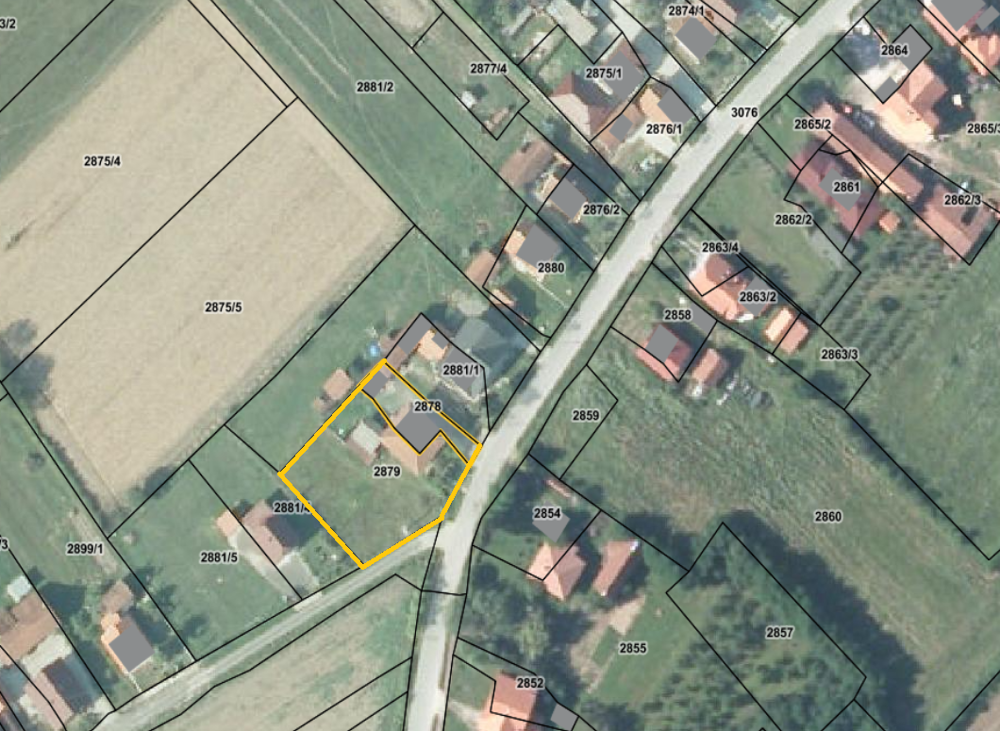
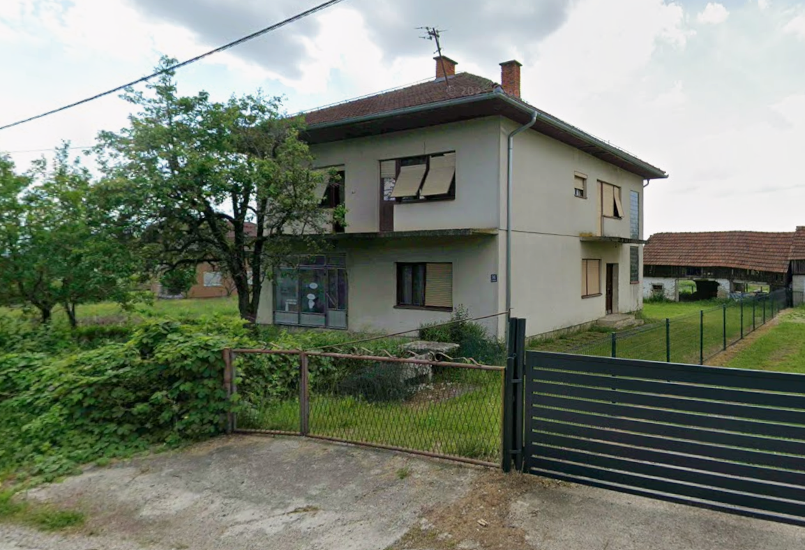
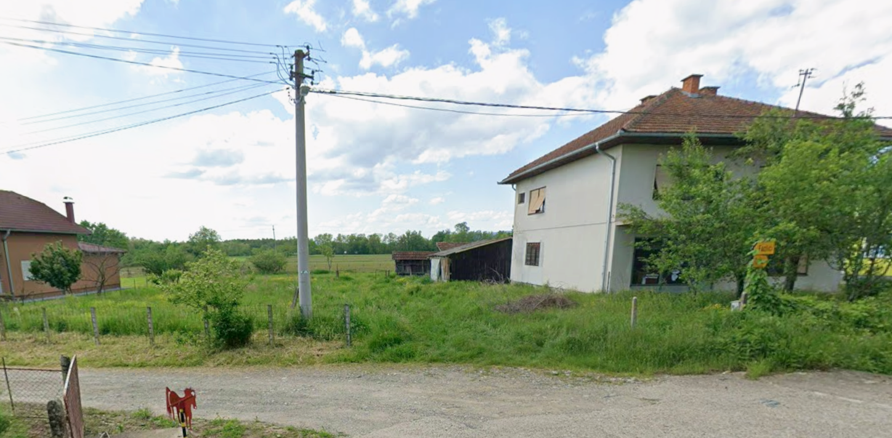

Fotogalerija



×

Na prodaju je prostrana stambeno-poslovna nekretnina na atraktivnoj lokaciji u okolini Kozarca (Trnopolje, opština Prijedor). Ova nekretnina nudi izuzetnu fleksibilnost korištenja, kvalitetnu gradnju i veliko zemljište sa dodatnim potencijalom za razvoj.
Kuća je izgrađena 1975. godine kao funkcionalna cjelina za stanovanje i poslovanje. U prizemlju se nalazi odvojeni poslovni prostor (ranije prodavnica sa skladištem), idealan za vlastiti biznis ili izdavanje. Na spratu je komforan stambeni prostor sa dobrim rasporedom prostorija, više soba i balkonom. Ukupna neto površina objekta iznosi oko 180 m² na dvije etaže.
Posebnu vrijednost daje veliko zemljište od cca 1.362 m², koje pruža brojne mogućnosti – od uređenja dvorišta i vrta do dodatne gradnje ili proširenja poslovnih kapaciteta. Parcela ima dobar pristup i kompletnu infrastrukturu, što omogućava jednostavno i praktično korištenje.
Nekretnina se nalazi u mirnom, ali dobro povezanom naselju u blizini centra Kozarca, sa direktnim pristupom asfaltnoj cesti i u uređenom okruženju.
Prema nalazu vještaka, objekat je građen kvalitetno i funkcionalno, klasičnom metodom gradnje. Svi objekti su uredno izgrađeni i posjeduju kompletnu dokumentaciju i sve potrebne dozvole, uključujući i poslovni prostor i pomoćne objekte.
Kuća se trenutno ne koristi i zahtijeva određenu adaptaciju, što novom vlasniku daje priliku da je uredi prema vlastitim željama i potrebama. Prema procjeni, uz relativno umjerena ulaganja objekat se može brzo dovesti u potpuno funkcionalno stanje.



Kontakt: Ekrem Žerić
Telefon: +387 65 824 879
Kontakt: Dženana Eminic
Telefon: +43 676 460 50 83